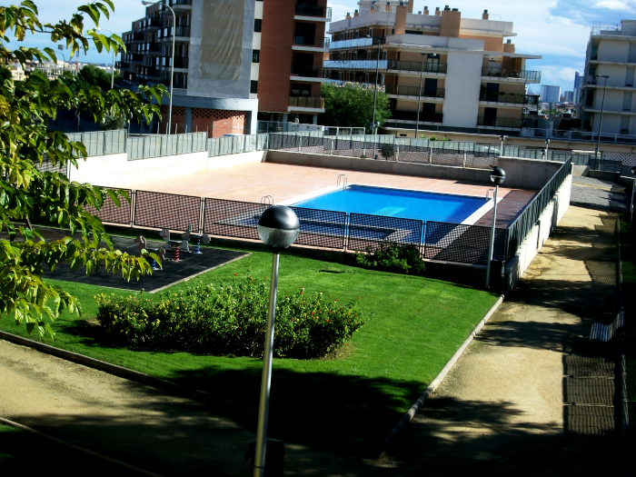
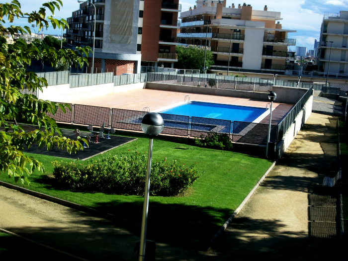

Calidad, seriedad y compromiso.
Decovert
Decovert es una empresa que cuenta con una considerable experiencia dentro del sector de la jardinerÃa. Desde su nacimiento, ha mostrado una esencia de mejora y un espÃritu de progresión que nos ha llevado a entregar un gran servicio a nuestros clientes.
Somos una empresa multidisciplinar especializada en la creación y mantenimiento de espacios para el disfrute al aire libre. Decovert como empresa de jardinerÃa, se adapta a todo tipo de trabajos de jardinerÃa en la ciudad de Valencia, que represente un reto (plantaciones de tepes de césped, rehabilitaciones de jardines, grandes mantenimientos y puesta apunto de un jardÃn, riego, talas y podas en altura, limpieza y perfilados de setos, nuevas plantaciones...) sin dejar a un lado las labores básicas de jardinerÃa y mantenimientos de jardines, con nuestro particular toque de calidad.
Decovert ofrece, gracias a su equipo multifacético, una variedad de servicios en el ámbito de la jardinerÃa. Nos dedicamos a perfeccionar su jardÃn a la carta, solo debe ponerse en contacto con nosotros y comentarnos cuales son tus ideas, el resto queda en nuestras manos. Porque para nosotros, nuestro hogar es su jardÃn.
JardinerÃa
 



Servicios
Un gran equipo, un gran trabajo.
Nuestra experiencia nos ha hecho adquirir conocimientos, por eso ofrecemos variados servicios que engloban el mundo de la jardinerÃa. Brindamos nuestros servicios en toda la provincia de Valencia, donde incluimos particulares, empresas, comunidades de vecinos o urbanizaciones.

Riegos
Sistemas de riego
Decovert jardinería, realiza cualquier instalación de riego automatizado, minimizando el consumo en su jardín. Instalamos bombas inyectoras para la aplicación vía riego y aplicamos tratamientos fitosanitarios, además de instalaciones de sondas para el control de humedades.

Mantenimientos
Conservación y mantenimiento.
En Decovert realizamos mantenimientos integrales de comunidades. Contamos con personal profesional y cualificado. Ofrecemos servicios de limpieza de edificios, mantenimientos de jardínes y piscinas.

Podas
Podas, talas y perfilados.
Sea cual fuere el motivo por el que usted necesita podar sus árboles, en Decovert le prestamos asesorÃa y servicio personalizado. Disponemos de la mejor tecnologÃa para los arreglos y poda de todo tipo de árboles.

Tratamientos fitosanitarios
Decovert, da servicio y asesoramiento para cualquier problema que le pueda surgir en su entorno ajardinado, aplicando productos homologados y personalizados sin dañar el medio ambiente. Además de tratamientos con técnicas de endoterapia e inyección directa.

Paisajismo
Nuestros modelos de paisajismo se adaptan a cualquier tipo de superficie. Estudiamos, diseñamos y ejecutamos todo tipo de proyectos. Además añadimos decoración e iluminación.
Contacto
C/ Compositor Vert, 26
46016 Borbotó (Valencia)
Horario de oficinas:
L-V 08:00 a 19:00
administracion@decovert.es
637 557 031 - 961 113 413